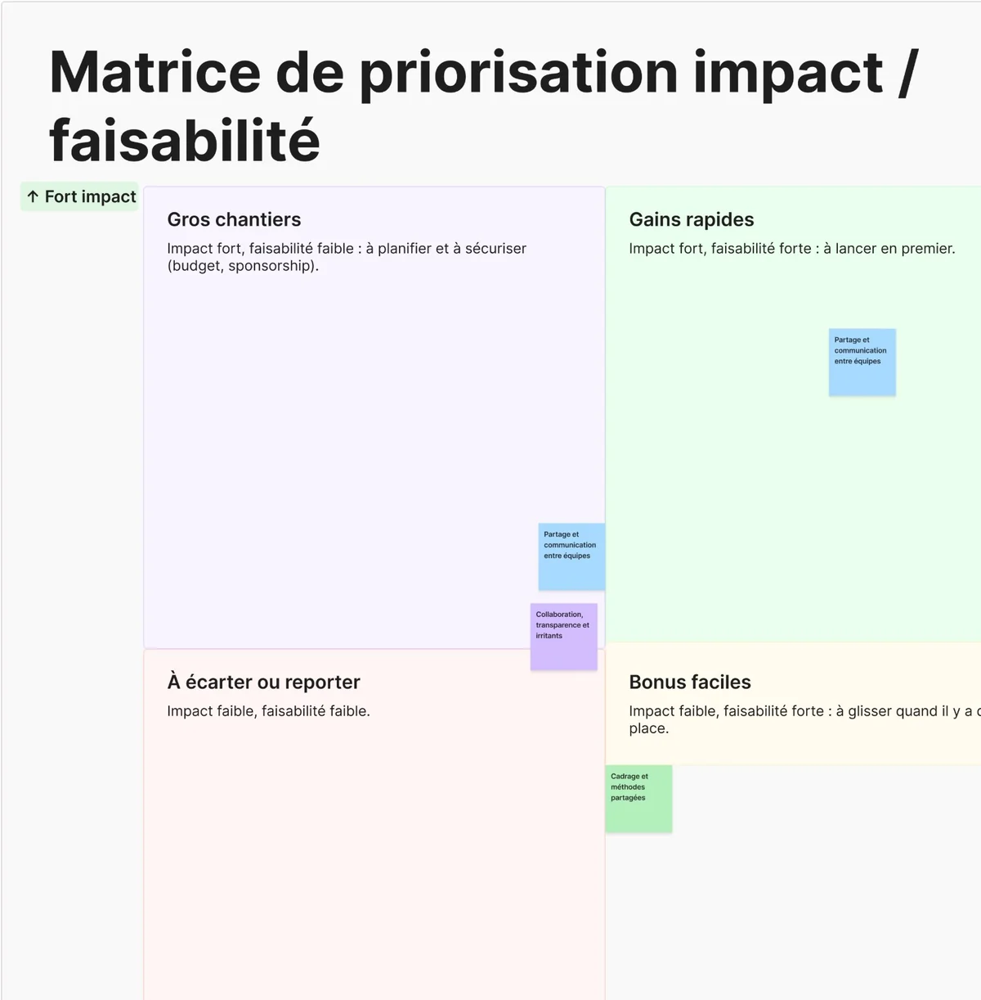

Cadrage
- ProblèmeQuelles actions concrètes amélioreraient le processus de conception du studio et sa collaboration avec les équipes produit, et lesquelles lancer en premier en 2027 ?
- Ce que j’ai faitInterrogé 17 personnes (direction, produit, ops, design, recherche), envoyé un questionnaire aux chefs de département, synthétisé 4 grands enseignements, puis conçu et animé un atelier de co-création pour en faire des recommandations.
- ImpactDes recommandations actionnables et priorisées sur une matrice effort / impact, prêtes à nourrir le programme 2027 du studio.
Contexte
Le studio et son contexte
La DNUM pilote les services numériques des Ministères Sociaux. Son studio design accompagne les équipes produit sur des refontes et de nouveaux services publics, avec des internes et des freelances : designers, user researchers, experts accessibilité, coachs produit et ops.
Le Studio de la DNUM, encore assez jeune, souhaite mesurer sa maturité design et comprendre comment améliorer ses process pour avoir un plus grand impact sur les projets menés par les différents départements des Ministères Sociaux.
Méthode
Approche et méthodologie
- 17personnes interrogées
- 1questionnaire pour les chefs de département
- 4grands enseignements
- 1atelier de co-création d'1 h 30
- Investigation : entretiens avec 17 personnes : sous-direction, coaching produit, ops, chefs de projet et de département, design et recherche utilisateur.
- Questionnaire : un questionnaire envoyé aux chefs de département, peu disponibles pour des entretiens, afin d'intégrer aussi leur point de vue.
- Synthèse thématique : 4 grands enseignements, chacun compté sur l'ensemble des entretiens et illustré par des verbatims.
- Atelier de co-création : partager les enseignements avec des experts produit et des figures du studio, puis produire, valider et prioriser des idées ensemble.
Déroulé de l'atelier
![Déroulé de l'atelier. But : présenter les grands enseignements de l'investigation, puis trouver ensemble des propositions, les valider et les prioriser. Durée 1 h 30 avec une pause de 5 minutes, hybride, présentiel de préférence, 8 à 12 participants. Objectifs : identifier des actions concrètes pour améliorer les processus de conception et la collaboration avec les équipes produit, et créer une matrice effort / impact des chantiers d'organisation design pour 2027. Programme : introduction 10 minutes, enseignements 10, brainstorming 30, validation des idées 15, pause 5, priorisation par effort et impact 25, clôture avec la matrice 10.](../assets/dnum-workshop-plan.webp)
| Durée | Étape | Comment |
|---|---|---|
| 10 min | Introduction | Objectif, résultat attendu, déroulé et consignes de participation. |
| 10 min | Enseignements | Les 4 grands enseignements et leurs verbatims, puis les questions de clarification. |
| 30 min | Brainstorming | Un couloir par enseignement. 15 minutes en silence, une idée par post-it, puis partage rapide et regroupement des doublons. |
| 15 min | Validation | Chacun vote pour les idées qui lui semblent actionnables et pertinentes. Les idées qui obtiennent 5 votes ou plus sont retenues. |
| 25 min | Priorisation | Effort voté en tailles de t-shirt (S, M, L), impact voté sur une barre de progression, avec commentaires facultatifs. |
| 10 min | Clôture | Les idées retenues placées sur la matrice effort / impact. |
Données
Les quatre grands enseignements de l'investigation
Insight 1 : Des expertises en silo ou tardives
Accessibilité, développement, recherche : intégrés tard ou de façon ponctuelle.
- Preuve
- 12 personnes sur 17
- Décision
- Intégrer toutes les expertises dès le lancement du projet
- Résultat
- Thème : lancement et rituels pluridisciplinaires
Insight 2 : Une organisation pas encore standardisée
Modes de travail, sponsorship : les règles du jeu ne sont pas partagées, et la visibilité interne est faible.
- Preuve
- 11 personnes sur 17
- Décision
- Des cadres et méthodes partagés par type de projet
- Résultat
- Thème : cadrage et méthodes partagées
Insight 3 : Un faible suivi et une faible mesure d'impact
Peu d'indicateurs, pas de suivi budgété pour les externes, des mesures d'impact difficiles à obtenir.
- Preuve
- 10 personnes sur 17
- Décision
- Définir des indicateurs de succès dès le départ
- Résultat
- Thème : mesurer le succès dès la conception
Insight 4 : Les particularités du modèle freelance
Les temps de partage, de suivi et de test, ainsi que la formation à l'IA, ne sont pas toujours facturables.
- Preuve
- 8 personnes sur 17
- Décision
- Financer et adapter les temps de partage
- Résultat
- Thème : financer les temps de partage

Ce qu'ils ont dit
Souvent on essaie de faire sans les informations.
Designer freelance, à propos des données manquantes en début de projetParfois je découvre sur le tas quelle est l'organisation choisie.
Chef de projet, à propos du mode produit ou du mode agenceDès que tu touches à l'organisation, si tu n'as pas le sponsorship au niveau hiérarchique tu n'y arriveras pas.
Expert produitLa plupart des PM sont conscients des obligations. Ils ont besoin d'aide concrète et de soutien sur ces sujets.
Chef de département
Atelier
Des enseignements aux idées
Dans la zone de brainstorming, chaque enseignement avait son couloir. Les participants ont écrit en silence, une idée par post-it, puis regroupé les doublons en thèmes. Ils ont ensuite voté pour les idées actionnables ; les thèmes ayant obtenu 5 votes ou plus sont passés à la priorisation.

Cinq thèmes ont été retenus : lancement et rituels pluridisciplinaires ; partage et communication entre équipes ; collaboration, transparence et irritants ; cadrage et méthodes partagées ; financer les temps de partage.
Priorisation par effort et impact

Lancement et rituels pluridisciplinaires a reçu les votes d'impact les plus élevés pour un effort petit à moyen. Financer les temps de partage a été le plus difficile à évaluer : un participant a noté qu'il était difficile de se prononcer sans connaître le budget.
Impact
Recommandations pour le programme 2027

La matrice donne au studio un point de départ clair pour 2027. J'ai traduit chaque thème en actions concrètes, à partir des idées des participants eux-mêmes.
Gain rapide
Partage et communication entre équipes
- Des temps de partage réguliers où les équipes présentent leur démarche et leurs apprentissages
- Un document partagé, alimenté au fil des projets, sur le planning et les ressources
- Une communication interne qui touche aussi les freelances
Fort impact
Lancement et rituels pluridisciplinaires
- Une réunion de lancement avec toutes les parties prenantes au début de chaque projet
- Des binômes produit qui intègrent design, recherche, développement et accessibilité dès le premier jour
- Un point mensuel court pour ajuster l'organisation
À planifier
Collaboration, transparence et irritants
- Des outils partagés pour que chacun voie qui travaille sur quoi
- Rendre le planning des ressources visible pour les équipes produit
- Nécessite le sponsorship de la direction pour réussir
À cadrer
Cadrage et méthodes partagées
- Des cadres projet standard par type : investigation, refonte, conception et réalisation, amélioration continue
- Partager les méthodes de travail au lancement du projet
- Un référent accessibilité identifié pour chaque produit
Le financement des temps de partage reste une question ouverte pour le budget 2027 : le studio doit décider comment rendre facturables les temps de partage, de test et de formation des freelances.
Rétrospective
Ce que j’ai appris et ce que je ferais autrement
- Compter chaque enseignement sur l'ensemble des entretiens (12 sur 17, 11 sur 17…) a rendu le diagnostic difficile à contester et gardé la discussion sur les solutions.
- Le brainstorming silencieux, une idée par post-it, a donné autant de voix aux freelances qu'aux managers.
- Ce que je ferais différemment : laisser plus de temps à la priorisation, ou la répartir sur deux sessions. En 25 minutes, certains thèmes ont reçu peu de votes d'effort et d'impact, et la matrice serait plus solide avec plus de votes par idée.
Confidentialité. Les documents internes sont partagés sans données personnelles. Les verbatims sont anonymisés et attribués uniquement par rôle.